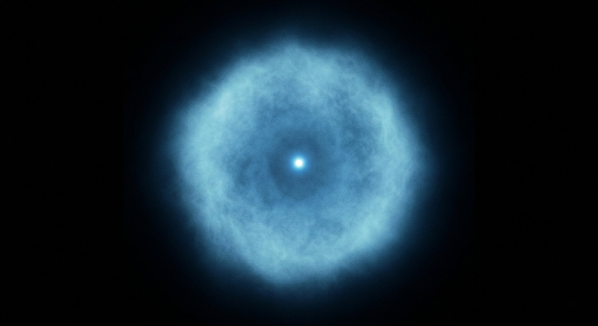

Si le noyau d’un atome d’hydrogène avait la taille d’une bille d’un centimètre, l’atome entier ferait six cents mètres. Et pourtant, ce presque-vide est solide.
Faits établisPoints débattusRéflexion signalée

Le noyau occupe une place infime ; c’est le nuage qui remplit l’espace — et qui rend la matière consistante.
Crédit : Illustration générée pour CREATIO · Licence : Usage interne au site
Cette salle décrit huit résultats de physique fondamentale, du plus simple — la taille d’un atome — au plus étrange — l’intrication. Elle corrige trois confusions très répandues (l’atome « vide », l'« observateur conscient », la « communication instantanée ») et distingue partout ce qui est mesuré de ce qui est interprété.
Textes bibliques cités
« Toutes choses subsistent grâce à lui. »
Colossiens 1:17
Le texte parle d’un maintien continu, non d’un lancement initial : une image à laquelle la physique ne s’oppose pas, sans qu’elle la démontre.
« Par l’abondance de son énergie dynamique » rien ne manque.
Ésaïe 40:26
La puissance décrite comme active, jamais comme une réserve inerte.
« Où étais-tu quand je fondai la terre ? »
Job 38:4
La limite du point de vue humain, posée avant toute équation — et qui n’a pas disparu depuis.
M1
Un atome presque vide — mais pas au sens où on le croit
Le rayon d’un atome d’hydrogène vaut environ 5,3 × 10⁻¹¹ m ; celui de son proton, environ 0,84 × 10⁻¹⁵ m. Un rapport de plus de 60 000. Si le noyau avait la taille d’une bille d’un centimètre, l’atome mesurerait six cents mètres. Et pourtant la matière est solide : c’est le nuage électronique qui occupe l’espace et donne sa consistance à l’objet.
≈ 63 000rapport des rayons (atome d’hydrogène / proton)
Un atome d’hydrogène est plus de 60 000 fois plus large que son noyau ; le rapport des rayons est d’environ 63 000 avec les valeurs CODATA.
Une bille d’un centimètre au centre d’un terrain de six cents mètres : voilà la proportion du noyau dans l’atome.
Nuance
L’image « l’atome est vide » est classique et **trompeuse** : l’électron n’est pas une bille en orbite, c’est une distribution de probabilité qui remplit l’espace. Les deux images coexistent, et cette salle les sépare au lieu de choisir la plus spectaculaire.
M2
Une seule particule, deux comportements
Envoyés un par un, à travers deux fentes, des électrons arrivent comme des particules et s’accumulent pourtant en une figure d’interférence — la signature d’une onde. Le motif n’existe qu’après des milliers d’arrivées : ce n’est pas l’électron qui est « à deux endroits », c’est l’ensemble qui décrit une onde.
Chaque électron ajoute un point ; le motif n’apparaît qu’après des milliers d’arrivées.
Crédit : Illustration générée pour CREATIO · Licence : Usage interne au site
1989démonstration de l’accumulation interférence par interférence
Des électrons envoyés un à un à travers deux fentes construisent progressivement une figure d’interférence : la dualité onde-corpuscule est observable particule par particule.
Chaque électron arrive comme une bille et contribue à dessiner des vagues — un point après l’autre.
Nuance
Aucun « observateur conscient » n’est nécessaire : l’écran enregistre, c’est tout. La confusion entre « mesurer » et « regarder » est la source de presque toutes les lectures fausses de cette expérience.
M3
Traverser un mur
Une particule peut franchir une barrière d’énergie qu’elle n’aurait pas, en physique classique, les moyens de franchir. C’est l’effet tunnel, qui explique la fusion au cœur du Soleil (Gamow 1928) et fait fonctionner le microscope à effet tunnel, capable d’images d’atomes individuels (Binnig & Rohrer 1982).
1928explication de la fusion stellaire par effet tunnel
L’effet tunnel, nécessaire pour rendre compte de la fusion solaire, est aussi le principe du microscope à effet tunnel qui produit des images d’atomes.
Le même mécanisme explique le feu des étoiles et permet de photographier des atomes — à soixante ans d’intervalle, avec les mêmes équations.
Nuance
L’effet tunnel n’est pas une « tricherie » : la probabilité de traversée décroît exponentiellement avec la largeur de la barrière. Ce n’est pas parce que c’est possible que c’est probable.
M4
Pourquoi la matière résiste
Le principe d’exclusion de Pauli (1925) interdit à deux électrons d’occuper le même état quantique. Ce n’est pas une force : c’est une règle de comptage des places disponibles. C’est elle qui donne un volume à la matière — et qui empêche les étoiles mortes de s’effondrer complètement, jusqu’à une masse limite calculée par Chandrasekhar en 1931.
1925énoncé du principe d’exclusion
Le principe d’exclusion de Pauli explique à la fois la résistance de la matière ordinaire et la stabilité des naines blanches, jusqu’à une masse limite.
La solidité d’une table ne vient pas d’un « plein » : elle vient d’une règle qui interdit de mettre deux occupants sur la même place.
Nuance
« La matière est pleine » et « la matière résiste » ne veulent pas dire la même chose. Il n’y a pas d’obstacle matériel, il y a une **impossibilité de co-occupation**.
M5
Deux plaques qui s’attirent dans le vide
Deux plaques conductrices, très proches, placées dans le vide, s’attirent. Prédit par Casimir en 1948, l’effet a été mesuré par Lamoreaux en 1997, avec un accord de l’ordre de 5 %. Ni charge, ni aimant, ni contact : la force est attribuée à l’énergie du vide entre les plaques.
Deux plaques conductrices, très proches, dans le vide : elles s’attirent, et on sait de combien.
Crédit : Illustration générée pour CREATIO · Licence : Usage interne au site
5 %accord entre mesure et prédiction (Lamoreaux 1997)
L’effet Casimir, attraction entre deux plaques conductrices proches attribuée à l’énergie du vide, a été mesuré avec un accord d’environ 5 % sur la prédiction.
Sans charge, sans aimant, sans contact : quelque chose pousse les plaques l’une vers l’autre.
Nuance
Le **lien** avec l’énergie du vide est l’interprétation standard, mais l’image physique employée pour le raconter reste discutée dans le détail. Le musée écrit la force mesurée, puis l’interprétation, avec leurs statuts respectifs.
M6
Intriqués
Deux particules préparées ensemble restent corrélées : mesurer l’une renseigne sur l’autre. Les inégalités de Bell, violées par l’expérience d’Aspect en 1982 puis par des dizaines d’autres, excluent les théories à variables cachées locales. Le prix Nobel 2022 a couronné ce programme.
1982violation expérimentale des inégalités de Bell
Les corrélations entre particules intriquées violent les inégalités de Bell : aucune théorie à variables cachées locales ne peut les reproduire.
Deux particules qui se répondent alors que rien, dans l’espace ordinaire, ne semble les relier.
Nuance
L’intrication **ne transmet aucune information** plus vite que la lumière : les résultats sont corrélés, mais chaque mesure prise seule est aléatoire. Toute formulation inverse est fausse, et cette salle ne la publie pas.
M7
La mesure la plus précise de la physique
Le moment magnétique de l’électron vaut 1,001 159 652 180 59, avec une incertitude à la treizième décimale. Le calcul théorique et la mesure s’accordent à une part sur mille milliards — l’un des accords les plus serrés jamais obtenus entre une équation et un appareil.
Là où l’on mesure un moment magnétique à la douzième décimale.
Crédit : Illustration générée pour CREATIO · Licence : Usage interne au site
1,001 159 652 180 59moment magnétique de l’électron (en unités de moment de Bohr)
La mesure du moment magnétique de l’électron s’accorde avec la prédiction de l’électrodynamique quantique à une part sur mille milliards.
Un calcul et une machine qui tombent d’accord à la douzième décimale : rarement la théorie physique a été mise à l’épreuve aussi près.
Nuance
C’est un triomphe de la **théorie physique**, pas une preuve théologique. Le musée ne mélange pas les deux registres : un accord numérique impressionnant reste un accord numérique.
M8
L’étrangeté n’est pas le désordre
Pourquoi les superpositions disparaissent-elles à notre échelle ? La décohérence l’explique remarquablement bien : l’environnement détruit les interférences. Mais la question de l’interprétation — Copenhague, multi-mondes, théories à variables, etc. — reste ouverte, et l’accord des physiciens n’est pas fait.
2003synthèse de référence sur la décohérence
La décohérence rend compte de l’apparition du monde classique, mais ne tranche pas le problème de la mesure : l’interprétation reste débattue.
Le monde classique émerge du quantique : la mécanique de cette émergence est décrite, la raison du résultat observé reste une question ouverte.
Nuance
Les **faits** (Bell, Aspect, Nobel 2022) sont établis ; le **sens philosophique** ne l’est pas. Le musée sépare soigneusement les deux, et ne prend pas parti entre les interprétations.
Ce que la science dit honnêtement
Les limites, dites franchement
« L’atome est vide » : image à corriger
Classiquement, le noyau est minuscule dans un atome immense. Quantiquement, la fonction d’onde électronique remplit cet espace. Le musée écrit les deux, dans cet ordre, parce que le second corrige le premier.
La conscience ne crée pas la réalité
L'« observateur » de la mécanique quantique est un appareil de mesure, pas un esprit. Cette confusion, très répandue dans les librairies de développement personnel, est explicitement écartée ici — et le mot « observateur » est expliqué chaque fois qu’il apparaît.
La physique quantique ne prouve ni ne réfute l’existence de Dieu
Le musée le dit sans détour. Il réserve l’encadré RÉFLEXION à une remarque volontairement limitée : l’étrangeté n’est pas l’absence d’ordre. Aucun résultat de cette salle n’est présenté comme un argument théologique.
Réflexion — et non mesure
Lecture proposée
Le monde quantique est bizarre, mais il n’est pas arbitraire. Ses règles permettent de prédire une propriété de l’électron avec douze chiffres exacts ; une table tient debout à cause d’une règle de comptage des états ; une étoile brille grâce à des particules qui traversent des barrières qu’elles ne devraient pas franchir. « Toutes choses subsistent grâce à lui » : le texte biblique parle d’un maintien, non d’un lancement. On peut lire cette phrase comme une image pieuse, ou y voir une intuition que la physique ne contredit pas. Le musée propose la seconde lecture — en précisant qu’elle n’est pas un résultat de physique, mais une méditation, et qu’aucune équation de cette salle ne la démontre.
« Il soutient toutes choses par sa parole puissante. »
Hébreux 1:3
Questions honnêtes
Les objections, prises au sérieux
« La mécanique quantique a-t-elle besoin d’un observateur conscient ? »
Non. C’est une confusion entre « mesure » et « conscience ». Un détecteur suffit, et la décohérence explique l’apparition du monde classique sans faire appel à un esprit.
« L’intrication peut-elle servir à communiquer instantanément ? »
Non. Elle corrèle des résultats, elle ne transporte aucune information utilisable. Chaque mesure prise seule est aléatoire : sans le message classique qui compare les résultats, il n’y a rien à lire.
« Pourquoi tant de discussions sur l’interprétation ? »
Parce que les équations fonctionnent parfaitement alors que leur lecture philosophique n’est pas unique. C’est un désaccord sur le sens, pas sur les prédictions — et le musée ne tranche pas.
« L’effet Casimir prouve-t-il que le vide est “plein d’énergie” ? »
Il montre qu’une force mesurée est attribuée à l’énergie du vide. L’expression « plein d’énergie » est une image ; le musée préfère la force, sa mesure et son incertitude, puis présente l’interprétation comme telle.
« Quel rapport avec la création ? »
Direct pour la précision des lois : la matière que nous touchons obéit à des règles d’une exactitude vertigineuse. Indirect pour le sens à leur donner : c’est l’objet de la réflexion, pas celui des mesures.
Ce que l’on pourra manipuler
Interactions de la salle
Chaque interaction possède un repli lisible sans JavaScript.
Interaction
Contenu
Repli
Zoom d’échelle
Un curseur continu va du mètre au femtomètre, avec un repère parlant : noyau de la taille d’une bille d’un centimètre, atome de six cents mètres. Un second mode montre que le nuage électronique, lui, remplit tout l’espace — les deux représentations ne se confondent pas.
Tableau d’échelles : atome 5,3 × 10⁻¹¹ m, proton 0,84 × 10⁻¹⁵ m, rapport ≈ 63 000, et l’explication des deux images.
Fentes d’Young à un électron
Le visiteur envoie les électrons un par un ; les impacts s’accumulent et le motif d’interférence apparaît. Un bouton « tenter d’observer le passage » détruit le motif — démonstration honnête, expliquée en clair.
Description de l’expérience et de son résultat, avec la source de 1989 et l’explication du rôle du détecteur.
Barrière tunnel
Une barrière d’énergie dont on règle la largeur : la probabilité de traversée chute de façon exponentielle. Deux usages affichés en regard — la fusion dans le Soleil et le microscope à effet tunnel.
Trois largeurs de barrière et les probabilités correspondantes, avec les deux applications.
Tableau de Pauli
Des places quantiques et des électrons : quand toutes les places basses sont prises, la matière résiste. L’utilisateur pousse un piston et sent la résistance augmenter.
Le principe énoncé en texte, avec l’exemple de la naine blanche et la masse limite de 1931.
Plaques de Casimir
Deux plaques dont on règle la distance : la force affichée varie fortement avec l’écartement. Le renvoi à la mesure de 1997 est permanent.
Trois distances et les forces correspondantes, avec l’incertitude de la mesure de 1997.
Intrication
Deux particules, deux analyseurs orientables : les corrélations apparaissent, et le panneau « aucune information ne circule ici » reste affiché en permanence.
Explication des corrélations de Bell en texte, avec la mention explicite de l’absence de transmission d’information.